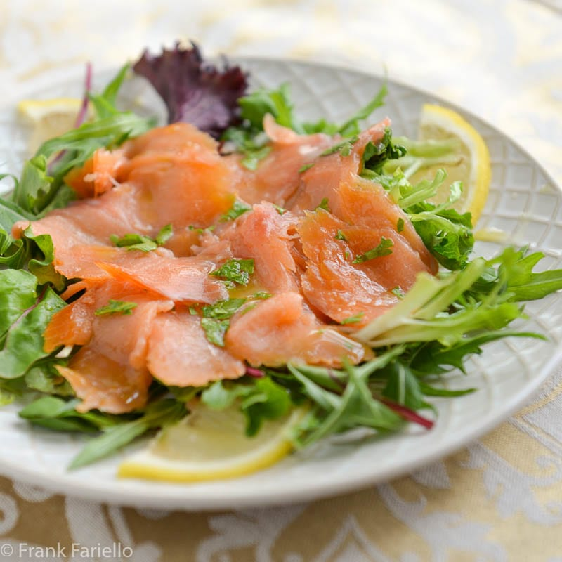
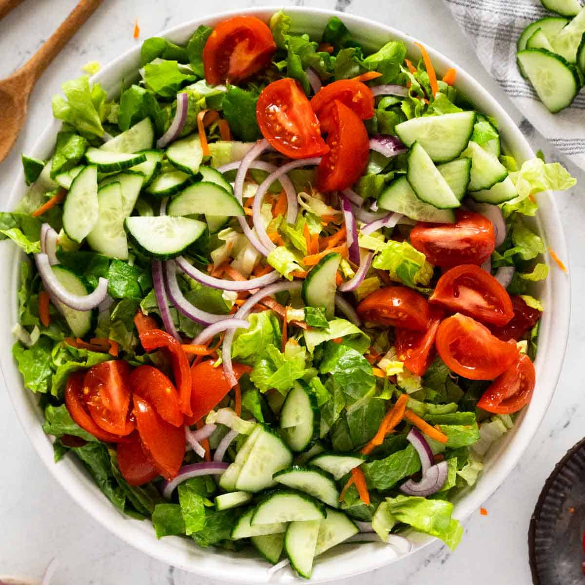

Our Menu
Appetizers
Smoked Salmon Carpaccio: Thinly sliced smoked salmon with capers, red onion, and fresh dill, drizzled with
lemon-herb vinaigrette. 
Beef & Vegetable Skewers: Marinated prime beef tips and seasonal vegetables grilled to perfection.

Portobello Mushroom Fries: Crispy breaded portobello mushroom strips served with a zesty garlic aioli.

House Salad: Mixed greens, cherry tomatoes, cucumber, red onion, and a choice of balsamic vinaigrette or
lemon-tahini dressing. 
Steaks
(All steaks are aged prime cuts, grilled to your preference)
Ribeye Steak (16 oz): Richly marbled and flavorful.
New York Strip (14 oz): Firm, tender, and intensely beefy.
Filet Mignon (8 oz / 10 oz): Exceptionally tender and lean.
Cowboy Steak (22 oz): Bone-in ribeye, a hearty and flavorful cut.
Lamb Chops: Grilled to perfection, seasoned with rosemary and garlic.
Chicken Supreme: Pan-seared boneless chicken breast with a savory herb crust.
Sauces
House Steak Sauce
Mushroom Demi-Glace
Chimichurri
Garlic Confit Oil
Sides
Garlic Mashed Potatoes
Crispy Onion Rings
Sautéed Asparagus
Roasted Rosemary Potatoes
Creamed Spinach (made with pareve cream alternative)
Grilled Seasonal Vegetables
Desserts
Chocolate Lava Cake: Warm, gooey chocolate cake with a molten center, served with pareve vanilla ice cream.
Fresh Berry Crumble: Seasonal berries baked with a sweet oat crumble topping.
Sorbet Trio: A refreshing selection of fruit sorbets.
Fruit Platter: Assortment of fresh seasonal fruits.